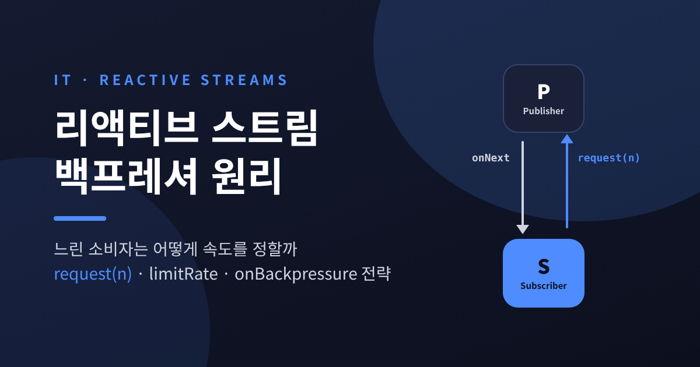
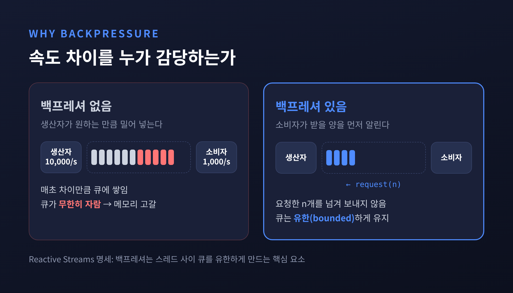
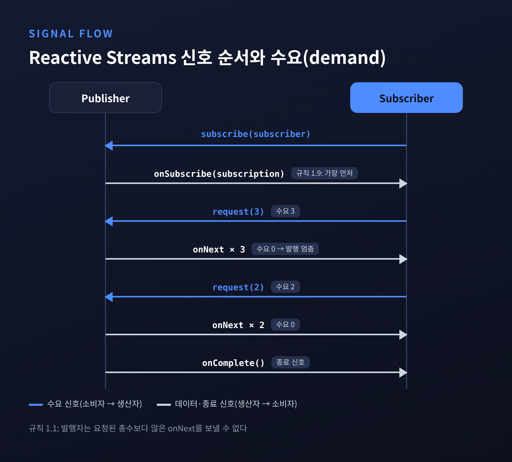
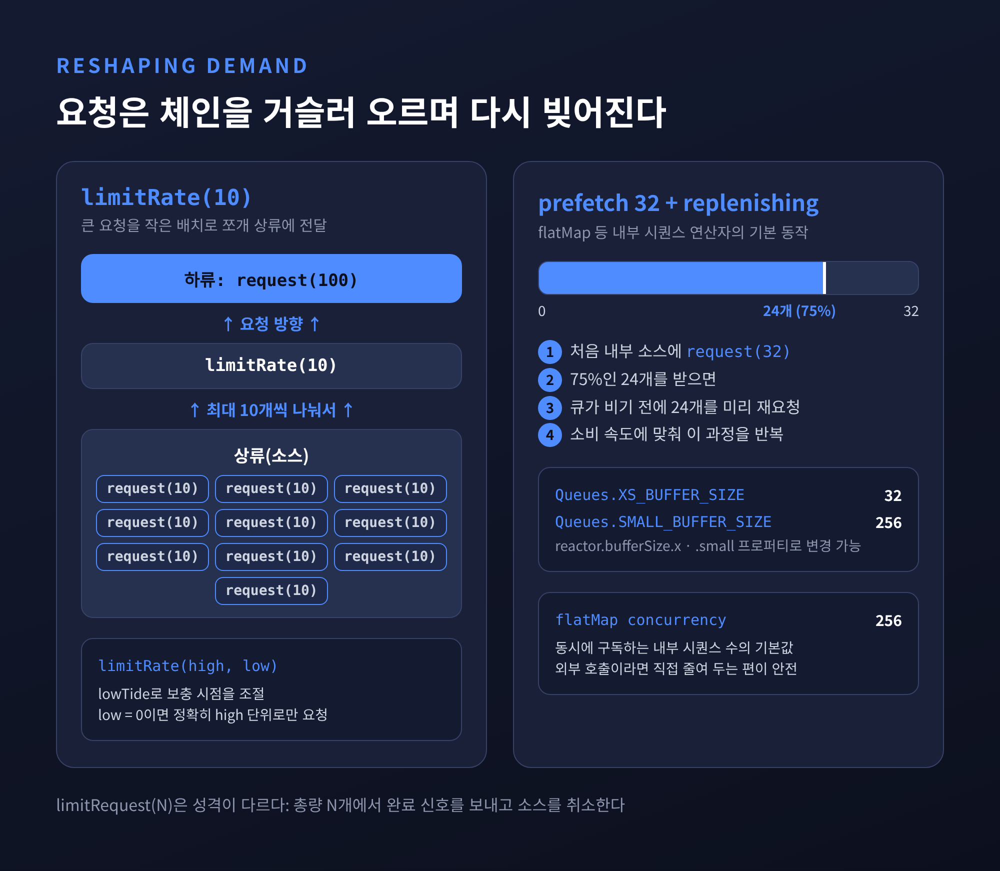
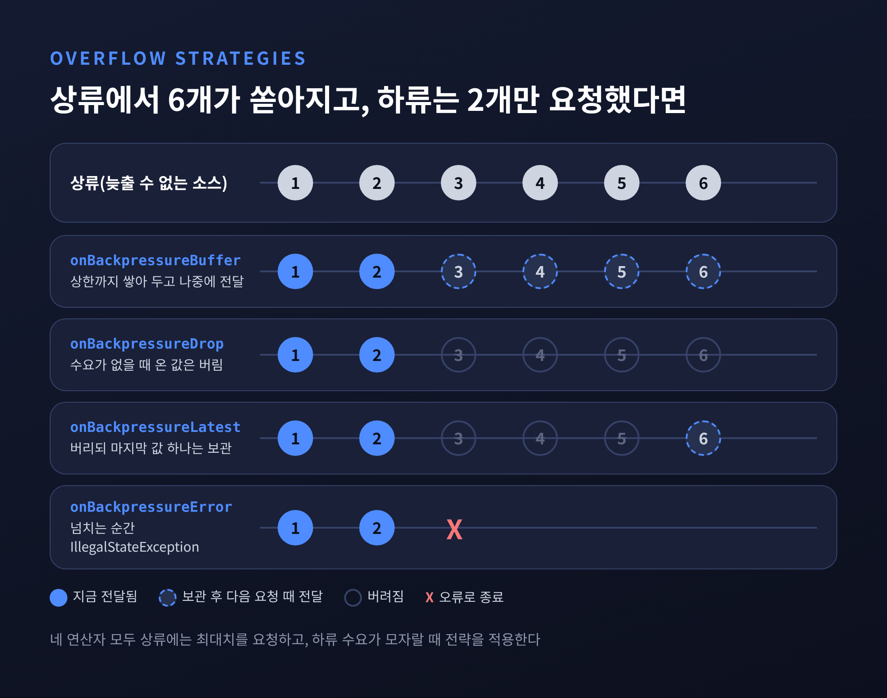
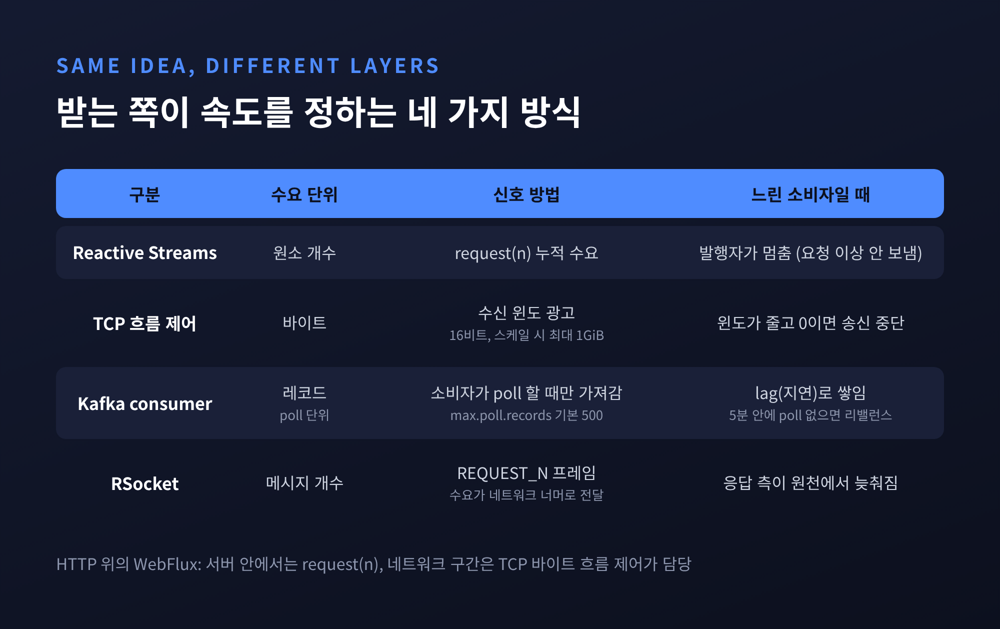

리액티브 스트림 백프레셔 원리 — 느린 소비자는 어떻게 속도를 정할까

이번 글에서는 리액티브 스트림의 백프레셔(Backpressure)를 정리해 보겠습니다. 빠른 생산자와 느린 소비자 사이에서 데이터 흐름을 누가, 어떤 신호로 조절하는지가 핵심입니다. 명세의 규칙에서 출발해 Reactor·Spring WebFlux의 연산자, TCP·Kafka와의 비교, 실무에서 자주 빠지는 함정까지 차례로 살펴봅니다.
세 줄 요약
- 백프레셔는 소비자가
request(n)으로 "n개까지 받겠다"고 알리고, 생산자는 그 수를 넘겨 보내지 않는 약속입니다.- Reactor에서는
limitRate·prefetch로 요청을 다듬고, 늦출 수 없는 소스에는onBackpressureBuffer/Drop/Latest/Error로 넘치는 데이터를 처리합니다.- HTTP 위의 WebFlux에서 네트워크 구간의 조절은 원소 개수가 아니라 TCP의 바이트 단위 흐름 제어가 맡습니다.
■ 왜 백프레셔가 필요한가
초당 1만 건을 만드는 생산자와 초당 1천 건만 처리하는 소비자가 있다고 해 보겠습니다. 차이 9천 건은 어딘가에 쌓여야 합니다. 보통은 둘 사이의 큐입니다.
이 상태가 몇 초면 괜찮습니다. 몇 분, 몇 시간 이어지면 큐는 끝없이 자라고, 결국 메모리가 바닥납니다. Reactive Streams 명세도 이 지점을 정확히 짚습니다. 큐가 무한히 커지는 것은 "발행자가 구독자보다 높은 속도를 오래 유지할 때"이며, 백프레셔는 스레드 사이를 잇는 큐를 유한하게(bounded) 유지하기 위한 장치라고 설명합니다.
Reactive Manifesto의 정의는 조금 더 넓습니다. 한 구성요소가 따라가지 못할 때 시스템 전체가 합리적으로 반응해야 하며, 압박받는 쪽이 치명적으로 실패하거나 통제 없이 메시지를 버려서는 안 된다고 말합니다. 그래서 이 개념을 부하에 우아하게 대응하기 위한 피드백 메커니즘이라고 부릅니다.

예전에는 "소비자를 더 빠르게 만들자"가 흔한 해법이었습니다. 지금의 리액티브 설계는 다른 질문을 던집니다. "소비자가 감당할 수 있는 양을 생산자에게 어떻게 알려줄 것인가."
■ Reactive Streams 명세: 네 개의 인터페이스와 request(n)
Reactive Streams는 Kaazing, Lightbend, Netflix, Pivotal, Red Hat, Twitter 등의 엔지니어가 함께 만든 작은 명세입니다. 목적은 한 문장입니다. "비차단(non-blocking) 백프레셔를 갖춘 비동기 스트림 처리의 표준." 현재 최신판은 2022년 5월에 나온 1.0.4입니다.
인터페이스는 네 개뿐입니다.
| 인터페이스 | 메서드 | 역할 |
|---|---|---|
Publisher<T> |
subscribe(Subscriber) |
데이터를 만드는 쪽 |
Subscriber<T> |
onSubscribe, onNext, onError, onComplete |
데이터를 받는 쪽 |
Subscription |
request(long n), cancel() |
둘을 잇는 계약, 수요를 전달 |
Processor<T,R> |
Subscriber + Publisher | 중간 가공 단계 |
흐름은 이렇게 진행됩니다.
구독자가 subscribe를 호출하면 발행자는 가장 먼저 onSubscribe(subscription)을 보냅니다(규칙 1.9).
구독자는 이 Subscription으로 request(n)을 호출해 수요를 알립니다(규칙 2.1).
발행자는 요청된 총수를 넘겨 onNext를 보낼 수 없습니다(규칙 1.1).
더 받고 싶으면 구독자가 다시 request를 부르고, 그만 받고 싶으면 cancel()을 부릅니다.

명세는 이 수를 수요(demand) 라고 부릅니다. 구독자가 요청했지만 아직 전달받지 못한 원소의 개수입니다. 몇 가지 세부 규칙도 눈여겨볼 만합니다.
- 0 이하 요청은 오류입니다.
request(0)이나 음수는IllegalArgumentException으로onError를 받아야 합니다(규칙 3.9). - Long.MAX_VALUE는 사실상 무제한입니다. 수요는 2^63-1까지 지원해야 하고, 그 이상은 "effectively unbounded"로 다뤄도 됩니다(규칙 3.17). 나노초마다 한 개씩 소비해도 292년이 걸리는 수이기 때문입니다.
- 재귀에는 상한이 있습니다.
onNext안에서 곧바로request를 불러도 되지만, onNext → request → onNext로 이어지는 동기 재귀의 깊이를 제한해야 합니다(규칙 3.2, 3.3). - 취소 후 요청은 무시됩니다.
cancel()뒤의request는 아무 효과가 없어야 합니다(규칙 3.6).
규칙 2.1의 부연도 실무적입니다. 한 개씩 요청하면 매번 멈추고 기다리는 "stop-and-wait"가 되어 비효율적이니, 처리 가능한 상한만큼 요청하라고 권합니다. 흐름 제어가 "느리게 받기"가 아니라 "감당할 만큼 넉넉히 받기"라는 점을 보여주는 대목입니다.
이 네 인터페이스는 JDK에도 들어왔습니다.
JEP 266으로 Java 9에 java.util.concurrent.Flow가 추가됐고, Flow.Publisher·Flow.Subscriber·Flow.Subscription·Flow.Processor가 같은 구조로 중첩돼 있습니다.
Flow.defaultBufferSize()는 256을 돌려주고, 구현 도구로 SubmissionPublisher가 함께 제공됩니다.
Reactive Streams 쪽은 1.0.2부터 두 타입을 오가는 FlowAdapters를 제공합니다.
■ Push와 Pull 사이: 동적 push-pull
생산자가 알아서 밀어 넣는 방식을 push, 소비자가 필요할 때 가져가는 방식을 pull이라 부릅니다. push는 지연이 짧지만 소비자를 압도할 수 있습니다. pull은 안전하지만, 데이터가 없을 때 계속 물어보는 낭비가 생기기 쉽습니다.
Reactive Streams는 스스로를 "동적 push-pull 스트림"이라고 설명합니다. Reactor 레퍼런스는 이를 더 풀어서 말합니다. 소비자는 처음 요청하기 전에는 아무것도 받지 않는다는 점에서 pull입니다. 소스는 데이터가 생기는 대로 보낸다는 점에서 push입니다. 다만 그 push는 언제나 요청된 개수 안에서만 일어납니다.
정리하면 수요가 넉넉할 때는 push처럼, 수요가 바닥나면 pull처럼 움직이는 셈입니다. 요청 신호가 데이터와 반대 방향으로 흐른다는 것이 구조의 핵심입니다.
■ Reactor와 WebFlux에서 수요를 다루는 법
기본값은 '무제한'입니다
가장 먼저 알아둘 사실이 있습니다.
Reactor에서 subscribe()와 대부분의 람다 변형, block(), blockFirst(), blockLast(), toIterable()·toStream() 순회는 구독 즉시 Long.MAX_VALUE를 요청합니다.
코드를 평범하게 쓰면 수요 조절이 "꺼진 것처럼" 동작한다는 뜻입니다.
직접 수요를 조절하려면 BaseSubscriber를 상속합니다.
Flux.range(1, 1_000)
.subscribe(new BaseSubscriber<Integer>() {
@Override
protected void hookOnSubscribe(Subscription s) {
request(10); // 처음엔 10개만
}
@Override
protected void hookOnNext(Integer v) {
process(v);
request(1); // 하나 처리할 때마다 하나 더
}
});
hookOnSubscribe를 재정의했다면 최소 한 번은 request를 불러야 합니다.
부르지 않으면 데이터가 한 건도 흐르지 않습니다.
연산자는 요청을 다시 빚습니다
수요는 체인을 거슬러 올라가며 모양이 바뀝니다.
buffer(N)이 하류에서 request(2)를 받으면 "꽉 찬 버퍼 두 개"로 해석해 상류에는 2×N개를 요청합니다.
flatMap처럼 내부 시퀀스를 다루는 연산자에는 prefetch가 있습니다.
내부 시퀀스에 처음 보내는 요청량이고, 대부분 기본값이 32입니다.
여기에 replenishing 최적화가 붙습니다.
prefetch의 75%가 채워지면 그만큼을 미리 다시 요청합니다.
32라면 24개를 받은 시점에 24개를 더 요청하는 식이라, 큐가 완전히 빌 때까지 기다리지 않습니다.
참고로 Reactor 내부 상수 Queues.XS_BUFFER_SIZE는 32, Queues.SMALL_BUFFER_SIZE는 256이며 각각 시스템 프로퍼티(reactor.bufferSize.x, reactor.bufferSize.small)로 바꿀 수 있습니다.
limitRate와 limitRequest
하류가 Long.MAX_VALUE를 요청하더라도 상류에는 조금씩 전달하고 싶을 때가 있습니다.
이때 쓰는 것이 limitRate(N)입니다.
하류의 request(100)이 limitRate(10)을 지나면 상류에는 최대 10개짜리 요청이 열 번 나뉘어 올라갑니다.
limitRate(highTide, lowTide) 변형으로 보충 시점을 조절할 수 있고, lowTide를 0으로 두면 정확히 highTide 단위로만 요청합니다.

limitRequest(N)은 성격이 다릅니다.
요청을 쪼개는 것이 아니라 총량의 상한을 둡니다.
N개가 나오면 하류에 완료 신호를 보내고 소스를 취소합니다.
repository.findAll() // 상류: DB 스트림
.limitRate(100) // 100개씩 끊어서 요청
.flatMap(this::enrich, 8) // 외부 호출은 동시에 8개까지만
.subscribe();
■ 늦출 수 없는 소스: onBackpressure 전략 네 가지
모든 생산자가 요청에 맞춰 속도를 늦출 수 있는 것은 아닙니다. 시계 틱, 마우스 움직임, 외부에서 밀려오는 이벤트가 그렇습니다. Spring 문서의 표현처럼, 늦출 수 없는 발행자는 버퍼링할지, 버릴지, 실패할지 정해야 합니다.
Reactor의 onBackpressure* 연산자는 이 선택을 명시적으로 만듭니다.
공통적으로 상류에는 최대치를 요청하고, 하류의 요청이 모자랄 때 정해진 전략을 적용합니다.

| 연산자 | 하류 수요가 없을 때 | 유실 | 어울리는 곳 |
|---|---|---|---|
onBackpressureBuffer |
쌓아 둔다(유한·무한) | 버퍼가 넘칠 때만 | 순간적인 폭주를 흡수할 때 |
onBackpressureDrop |
새 값을 버린다 | 있음 | 일부 유실이 괜찮은 지표·로그 |
onBackpressureLatest |
버리되 마지막 값 하나는 남긴다 | 있음 | 최신 상태만 중요한 UI·시세 |
onBackpressureError |
IllegalStateException을 낸다 |
스트림 종료 | 넘침 자체가 버그인 경우 |
유한 버퍼에는 넘칠 때의 정책을 붙일 수 있습니다.
BufferOverflowStrategy는 세 가지입니다.
ERROR는 IllegalStateException을 전파하고, DROP_LATEST는 새로 들어온 원소를 조용히 버리며, DROP_OLDEST는 가장 오래된 원소를 빼고 새 원소를 뒤에 넣습니다.
sensorEvents // 늦출 수 없는 외부 이벤트
.onBackpressureBuffer(
1_000, // 버퍼 상한
dropped -> log.warn("dropped {}", dropped),
BufferOverflowStrategy.DROP_OLDEST)
.publishOn(Schedulers.boundedElastic()) // 느린 처리는 별도 스레드에서
.subscribe(this::save);
장점만 있는 전략은 없습니다.
버퍼는 유실을 늦출 뿐 없애지 못하고, 드롭은 상류를 전혀 늦추지 않습니다.
실제로 onBackpressureDrop의 구현을 보면 구독 직후 상류에 request(Long.MAX_VALUE)를 보냅니다.
상류는 계속 최대 속도로 흐르고, 연산자가 하류 수요가 0일 때 값을 버리며 discard 훅에 넘길 뿐입니다.
■ TCP 흐름 제어, Kafka pull과 나란히 보기
받는 쪽이 속도를 정한다는 발상은 새롭지 않습니다. 오래된 네트워크 기술에도 같은 생각이 들어 있습니다.
TCP 흐름 제어는 수신 측이 매 세그먼트에 "지금 받을 수 있는 양"을 윈도로 실어 보냅니다. 송신 측은 아직 확인받지 못한 데이터가 이 윈도를 넘지 않게 보냅니다. 수신 애플리케이션이 느리게 읽으면 윈도가 줄고, 버퍼가 가득 차면 0이 되어 송신이 멈춥니다. 윈도 필드는 16비트라 스케일 없이는 최대 64KiB이고, 윈도 스케일 옵션의 지수는 최대 14까지라 최대 1GiB까지 넓힐 수 있습니다(RFC 7323). Reactive Streams의 누적 수요와 구조가 닮았지만, 단위가 바이트라는 점이 다릅니다.
Kafka 소비자는 철저한 pull입니다.
Kafka 설계 문서는 push 방식에서 소비 속도가 생산 속도보다 떨어지면 소비자가 압도되며, 이것이 사실상 서비스 거부 공격과 같다고 설명합니다.
pull에서는 소비자가 그저 뒤처졌다가 여유가 생길 때 따라잡으면 됩니다.
데이터가 없을 때 바쁘게 다시 묻는 낭비는 long poll로 줄입니다.
max.poll.records 기본값은 500, fetch.max.wait.ms는 500ms입니다.
대신 max.poll.interval.ms(기본 5분) 안에 다음 poll을 하지 못하면 실패로 간주돼 리밸런스가 일어납니다.
느린 소비자의 부담이 메모리가 아니라 lag과 리밸런스로 옮겨 가는 셈입니다.

여기서 WebFlux 개발자가 꼭 알아야 할 사실이 하나 있습니다.
HTTP 위의 WebFlux에서 request(n)은 네트워크를 건너가지 않습니다.
Stack Overflow에 올라온 Oleh Dokuka의 답변과 Baeldung의 정리에 따르면, 네트워크 구간의 조절은 TCP의 바이트 단위 흐름 제어가 맡고 수신 측의 실제 원소 수요는 송신 측에 드러나지 않습니다.
원소 단위의 수요는 서버 안, WebFlux와 비즈니스 로직 사이에서만 유효합니다.
수요 자체를 네트워크 너머로 보내야 한다면 RSocket이 대안입니다.
Spring 문서에 따르면 Request-Stream·Channel 상호작용에서 초기 수요는 요청 프레임에 실리고, 이후 수요는 REQUEST_N 프레임으로 전달됩니다.
응답 측을 원천에서부터 늦출 수 있어 네트워크 계층의 버퍼링 의존을 줄일 수 있습니다.
■ 실무에서 자주 빠지는 함정
subscribe()하나로 수요 조절이 사라집니다. 기본 요청이Long.MAX_VALUE이므로, 상류가 빠르면 중간 큐가 그대로 부풀 수 있습니다. 소비 속도가 중요하다면limitRate나BaseSubscriber로 수요를 명시하시길 권합니다.- 크기 없는
onBackpressureBuffer()는 무한 큐입니다. 명세가 막으려던 바로 그 구조를 다시 만드는 셈입니다. 상한과 오버플로 정책을 함께 정해 두는 편이 안전합니다. - Drop·Latest는 상류를 늦추지 않습니다. 버려도 되는 데이터에만 씁니다. 주문·결제처럼 한 건도 잃으면 안 되는 흐름에는 맞지 않습니다.
- 시간 기반 소스는 기다려 주지 않습니다.
Flux.interval은 수요가 제때 없으면 overflow로onError를 냅니다. 뒤에 느린 작업이 있다면 전략 연산자를 앞에 두어야 합니다. flatMap의 기본 동시성은 256입니다. 외부 API나 DB 호출을flatMap으로 감싸면 한꺼번에 수백 건이 나갈 수 있습니다.concurrency인자로 상대 시스템이 감당할 수를 정해 두십시오.- 이벤트 루프에서 블로킹하면 모든 것이 막힙니다. WebFlux는 작은 고정 스레드 풀로 요청을 처리합니다. 블로킹 라이브러리를 꼭 써야 한다면
publishOn으로 다른 스케줄러로 옮기고, JPA·JDBC 중심이라면 Spring MVC가 더 맞을 수 있습니다. - HTTP 경계 너머의 수요는 보이지 않습니다. 클라이언트가 느리면 서버는 TCP 윈도가 줄어드는 형태로만 그것을 느낍니다. 서버 사이 스트리밍에서 정확한 수요 전달이 필요하다면 RSocket 같은 프로토콜을 검토할 만합니다.
솔직히 말해 이 장치가 모든 과부하를 해결하지는 않습니다. 원천이 사용자의 요청이거나 외부 이벤트라면 결국 어딘가에서 버리거나, 거절하거나, 기다리게 해야 합니다. 백프레셔가 주는 것은 그 선택을 코드에 드러나게 하는 능력입니다.
정리하면 이렇습니다.
Reactive Streams는 네 개의 인터페이스와 request(n) 하나로 "받는 쪽이 속도를 정한다"는 약속을 만들었습니다.
Reactor는 그 위에 prefetch·limitRate·onBackpressure* 같은 도구를 얹었고, WebFlux는 그 흐름을 서버 안에서 이어 갑니다.
다만 HTTP 경계에서는 TCP가, 메시지 브로커에서는 Kafka의 pull이 각자의 방식으로 같은 문제를 풉니다.
"넘치는 데이터를 어떻게 할지 정하지 않았다면, 시스템이 대신 정합니다 — 대개 가장 나쁜 방식으로."
내 서비스의 리액티브 체인에서 수요가 어디서 정해지고 어디서 사라지는지 한 번 따라가 보시길 권합니다. 그 길을 한 번이라도 그려 본 분이라면, 다음 장애 앞에서 훨씬 차분해질 수 있을 것입니다.
출처
- Reactive Streams JVM 명세 README v1.0.4 — https://github.com/reactive-streams/reactive-streams-jvm/blob/v1.0.4/README.md
- Reactive Streams Release Notes — https://github.com/reactive-streams/reactive-streams-jvm/blob/v1.0.4/RELEASE-NOTES.md
- OpenJDK JEP 266: More Concurrency Updates — https://openjdk.org/jeps/266
- Java SE 21
java.util.concurrent.FlowJavadoc — https://cs-214.epfl.ch/jdk-21.0.9-docs/api/java.base/java/util/concurrent/Flow.html - Reactor Core Reference Guide — https://docs.spring.io/projectreactor/reactor-core/docs/3.4.13/reference/html
- Reactor Reference 부록 "Which operator do I need?" — https://docs.spring.io/projectreactor/reactor-core/docs/3.7.x/reference/html/apdx-operatorChoice.html
- Reactor
BufferOverflowStrategyJavadoc — https://docs.enterprise.spring.io/reactor-core/docs/3.5.23/javadoc-api/reactor/core/publisher/BufferOverflowStrategy.html - reactor-core 소스(Queues, FluxOnBackpressureDrop, FluxPublishOn) — https://code.yawk.at/io.projectreactor/reactor-core/3.4.2/reactor/util/concurrent/Queues.java
- Spring Framework Reference — WebFlux Overview — https://docs.spring.io/spring-framework/reference/7.0.6/web/webflux/new-framework.html
- Spring Framework Reference — RSocket — https://docs.spring.io/spring-framework/reference/7.0.6/rsocket.html
- Apache Kafka Design — https://kafka.apache.org/42/design/design/
- Apache Kafka Consumer Configs — https://kafka.apache.org/23/configuration/consumer-configs/
- RFC 7323, TCP Extensions for High Performance — https://www.rfc-editor.org/rfc/rfc7323.html
- RFC 9293, Transmission Control Protocol — https://www.rfc-editor.org/rfc/rfc9293.html
- Brian Storti, "TCP Flow Control" — https://brianstorti.com/tcp-flow-control
- Reactive Manifesto Glossary — https://reactivemanifesto.org/glossary
- Baeldung, "Backpressure Mechanism in Spring WebFlux" — https://www.baeldung.com/spring-webflux-backpressure
- Stack Overflow, "Backpressure mechanism in Spring WebFlux" (Oleh Dokuka 답변, 보관본) — https://kiwix.lema.org/stackoverflow.com_en_all_2023-11/questions/52244808/backpressure-mechanism-in-spring-web-flux
- Logicbig, Reactor flatMap — https://www.logicbig.com/tutorials/misc/reactive-programming/reactor/flat-map.html
#리액티브스트림 #백프레셔 #Backpressure #ProjectReactor #SpringWebFlux #limitRate #ReactiveStreams #TCP흐름제어